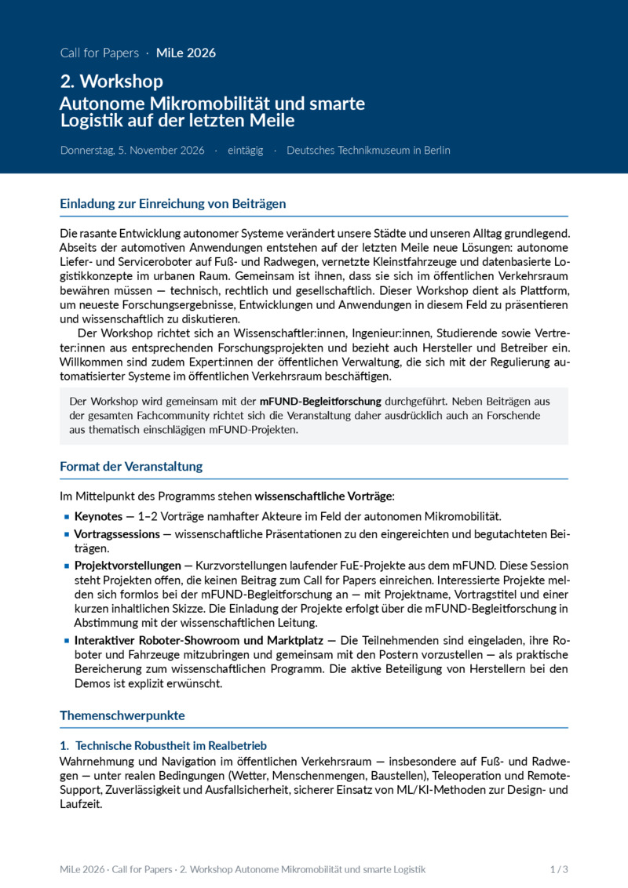
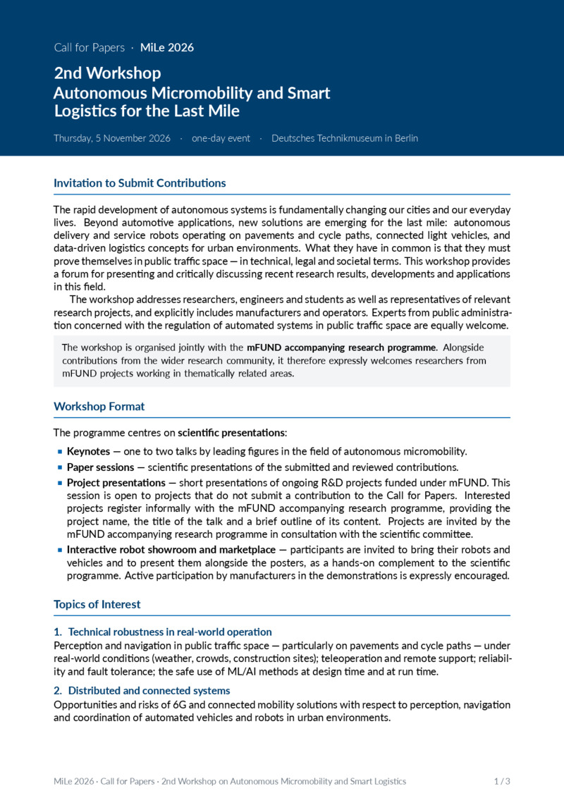
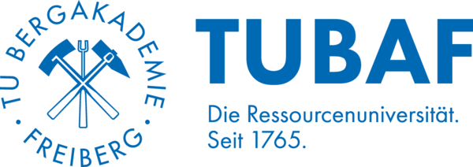
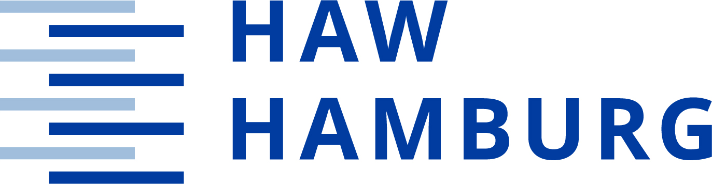
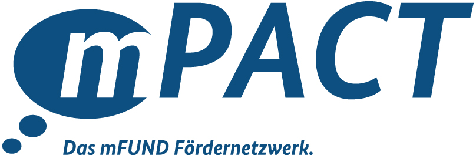

Call for Papers · MiLe 2026
2. Workshop
Jetzt anmelden: Die Teilnahme ist kostenfrei und auf 50 Personen begrenzt.
Zur Anmeldung →Die rasante Entwicklung autonomer Systeme verändert unsere Städte und unseren Alltag grundlegend. Abseits der automotiven Anwendungen entstehen auf der letzten Meile neue Lösungen: autonome Liefer- und Serviceroboter auf Fuß- und Radwegen, vernetzte Kleinstfahrzeuge und datenbasierte Logistikkonzepte im urbanen Raum. Gemeinsam ist ihnen, dass sie sich im öffentlichen Verkehrsraum bewähren müssen — technisch, rechtlich und gesellschaftlich.
Der Workshop dient als Plattform, um neueste Forschungsergebnisse, Entwicklungen und Anwendungen in diesem Feld zu präsentieren und wissenschaftlich zu diskutieren. Er richtet sich an Wissenschaftler:innen, Ingenieur:innen, Studierende sowie Vertreter:innen aus entsprechenden Forschungsprojekten und bezieht auch Hersteller und Betreiber ein. Willkommen sind zudem Expert:innen der öffentlichen Verwaltung, die sich mit der Regulierung automatisierter Systeme im öffentlichen Verkehrsraum beschäftigen.
Der vollständige Call for Papers steht in deutscher und englischer Sprache zum Download bereit.

Deutsch
Call for Papers
PDF · 3 Seiten · ca. 240 kB
PDF herunterladen
English
Call for Papers
PDF · 3 pages · approx. 240 kB
Download PDFEinreichung und Begutachtung erfolgen über EasyChair.
| Einreichfrist Full Paper & Poster/Abstract | 11.09.2026 |
| Anmeldung Projektvorstellungen (mFUND) | 30.09.2026 |
| Benachrichtigung der Autor:innen | 23.10.2026 |
| Workshop | 05.11.2026 |
| Camera-Ready-Fassung | 14.12.2026 |
Die Camera-Ready-Fassung wird bewusst erst nach dem Workshop eingereicht: Autor:innen erhalten so ausreichend Zeit für die Überarbeitung und können Anregungen aus der Diskussion vor Ort noch einarbeiten. Substanzielle Erweiterungen gegenüber der begutachteten Fassung sind dabei nicht vorgesehen; die wissenschaftliche Leitung prüft die eingereichten Endfassungen auf Übereinstimmung mit dem angenommenen Beitrag.
Erlebnisraum Digitale Souveränität in der Mobilität
Möckernstraße 26
10963 Berlin
Sprachen: Beiträge können in deutscher oder englischer Sprache eingereicht werden. Englisch ist — insbesondere bei Full Papers — ausdrücklich erwünscht, aber nicht verpflichtend.
Veröffentlichung: Der Workshopband erscheint referenzierbar über das Portal der Universitätsbibliothek Freiberg.
Teilnahmegebühren: Es werden keine Teilnahmegebühren fällig.
TU Bergakademie Freiberg, Fakultät für Mathematik und Informatik, Lehrstuhl Softwaretechnologie und Robotik
+49 3731 39 2568
sebastian.zug@informatik.tu-freiberg.de
mFUND-Begleitforschung im Auftrag des Bundesministeriums für Verkehr (BMV), TÜV Rheinland Forschungs- und Innovationsmanagement GmbH, Am Grauen Stein, 51105 Köln
+49 221 806 2262
Felix.Ludwig.Schneider@tuv.com
www.tuv.com/TRFI
Veranstaltet von


